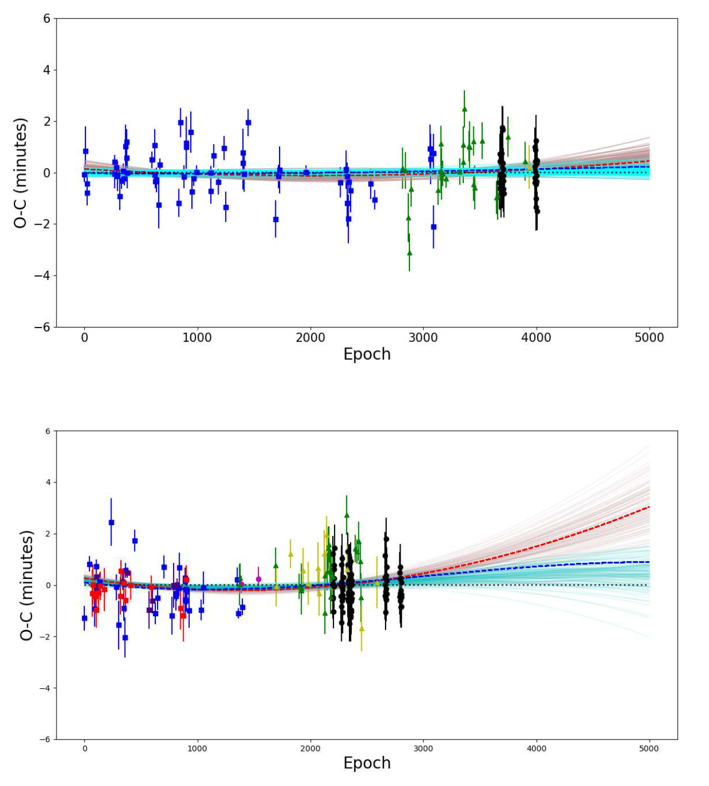
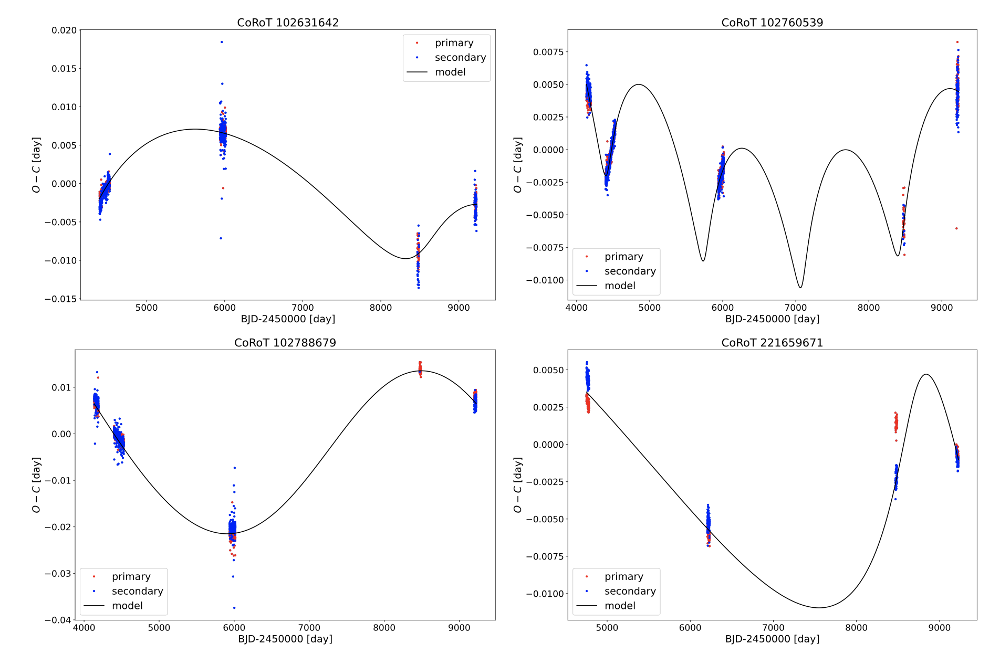

Welcome TESS followers to our latest news bulletin! Before we highlight some of the more recent papers from the archive, we would like to introduce you to the newest member of our team -- Dr. Nicole Schanche -- who is joining us as a TESS GI Support Scientist.
This week, we are looking at three recent papers from the archive. Enjoy!
Revisiting the Transit Timing Variations in the TrES-3 and Qatar-1 systems with TESS data (Mannaday et al., 2022) :
Deviations from linear ephemeris in the measured transit times of exoplanets provide important tests for the presence of additional planets in the system, orbital decay and/or apsidal motion. Combining high-precision photometry from multiple observatories is an important ingredient in these tests, even more so when the observations cover a large number of planetary orbits. This paper presents the analysis of transit timing variations (TTV) of two hot Jupiters -- TrES-3b and Qatar-1b -- using data from TESS, the 1.23 m Zeiss telescope at the Calar Alto Observatory, the exoplanet transit database, and the MAST archive. Mannady et al. (2022) analyzed 182 transits of TrES-3b and 228 transits of Qatar-1b covering more than a decade of observations and refined the respective ephemerides. The authors found indications of transit timing variations for both systems, argued that these are unlikely to be short-term and periodic, and ruled out additional planets in close orbits to the known planets. They also noted that the detected variations in TrES-3b cannot be attributed to apsidal precession, orbital decay, or the Applegate mechanism, whereas line-of-sight acceleration could be the cause of the detected TTVs for Qatar-1b.
A Population of Dipper Stars from the Transiting Exoplanet Survey Satellite Mission (Capistrant et al., 2022) :
Dipper stars are a subclass of young stellar objects (YSO) that exhibit episodic or quasi-periodic brightness decreases of up to about 10-50%. The physical processes responsible for this variability include chromospheric activity, accretion, occultation, etc. This paper presents the discovery and characterization of a large number of dippers and other variable sources observed by TESS. Capistrant et al. (2022) harness the power of citizen science to identify and analyze 293 dippers, of which 234 are new candidates, and another 121 variables. The authors measure dipper ages in the range of 1 to 40 Myr, with a peak around 2 Myr, and indicate that dippers older than 10 Myr exhibit IR excess, suggesting disk retention even for these older systems. They find no correlation between the morphology of the studied light curves and the corresponding effective temperature, and note that the burster systems are predominantly young (although a larger sample is needed to confirm the trend). Capistrant et al. (2022) argue that such a large sample of dippers would provide better understanding of the mechanisms responsible for the observed variability and help investigations aimed at characterizing variable stars.
CoRoT-TESS eclipsing binaries with light-travel-time effect(https://arxiv.org/abs/2209.01142) (Hajdu et al., 2022) :
Similar to transit timing variations in exoplanet systems, period changes in eclipsing binary stars can be attributed to the gravitational perturbations from a third body on a distant orbit. Such triple systems are valuable tracers of stellar formation and evolution, and can produce exotic systems such as binary neutron stars or blue stragglers. This paper presents a detailed analysis of timing variations in eclipsing binary stars (EBs) combining data from the CoRoT and TESS space telescopes. Hajdu et al. (2022) investigate 1428 EBs observed by both telescopes and probe for the presence of tertiary bodies. The authors identify four potential hierarchical triple star candidates (CoRoT ID 102631642, 102760539, 102788679, and 221659671) where the measured eclipse timing variations are consistent with the light-travel-time effect. The corresponding outer orbital periods range between ~1340 and ~6000 days, with orbital eccentricities between 0.17 and 0.66. For three of these systems, the TESS data was key to detect a period change in the corresponding EB, highlighting the synergy between observations from multiple telescopes. Another five systems (CoRoT ID 102285983, 102383485, 102568782, 102573289, and 102574112) exhibit significant eclipse timing variations consistent with either apsidal motion or parabolic trends, the latter potentially caused by mass transfer.
 Fig. 1: Taken from Mannaday et al. (2022). Transit timing variations in terms of Observed minus Calculated (O-C) for TrES-3b (upper panel) and Qatar-1b (lower panel). Blue symbols represent data from Mannaday et al. (2020), green and yellow symbols represent data from the exoplanet transit database (with quality flags 1 and 2), and the black symbols represent TESS data. The black, red, and blue lines represent linear, orbital decay, and apsidal motion models, respectively.
Fig. 2: Taken from Capistrant al. (2022). TESS light curves of two dipper stars exhibiting flux asymmetry.
 Fig. 3: Taken from Hajdu et. al. (2022). Eclipse timing variations of four eclipsing binary stars observed by CoRoT and TESS, in terms of Observed minus Calculated (O-C). The blue and red points represent the primary and secondary eclipses, respectively, and the black curve represents the best-fit light-travel-time model.